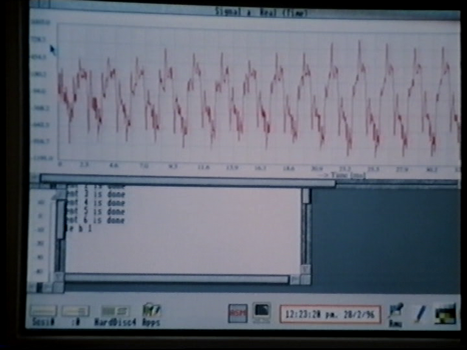
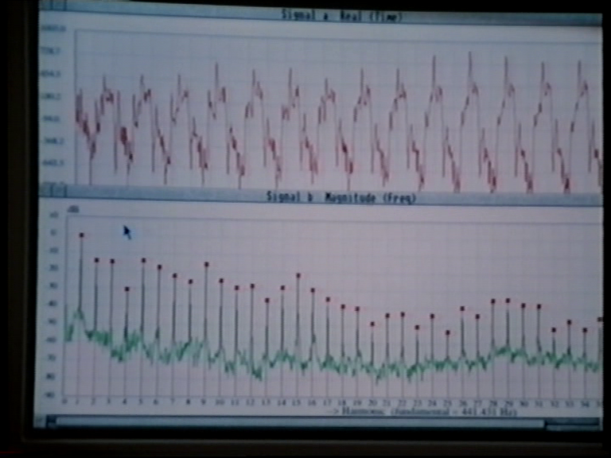
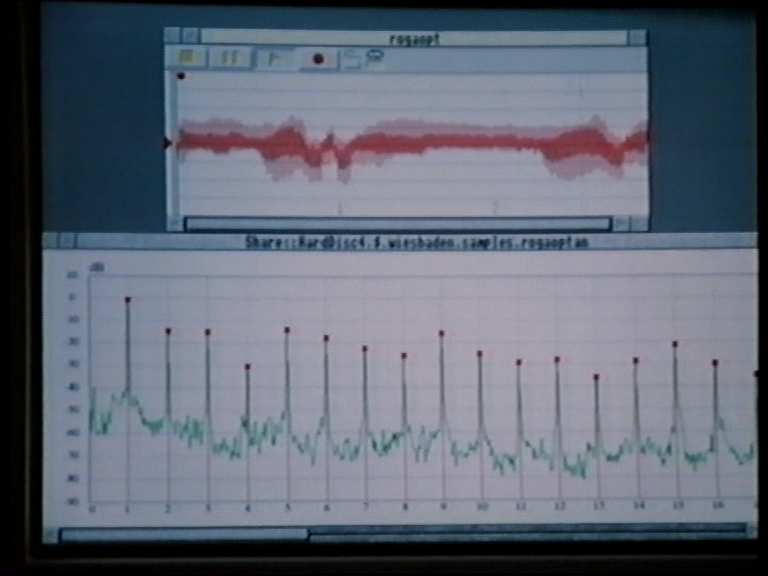

A digital signal processing program for educational purposes.
NEWS
Dec 17 2022: Version 2.0.1 Fixed inverse fft.
Dec 3 2022: Version 2.0.0 Java + JavaFX version.
Jul 1 2022: Version 1.1.3. Fixed several bugs and added new keyboard shortcuts for easy changing to another signal and zooming in and out.
Jul 28 2015: Version 1.1.2. Rebuilt Windows executable with latest Allegro 4 library (4.4.2) and recent gcc compiler (gcc 4.9.2, MinGW-w64 32 bit). The previous version 1.1 from 2007 does not run on Windows 8.
Sep 2007: Version 1.1.1. Updated documentation, chapter Introduction.
Jun 2007: Version 1.1. After 10 years I finally took some effort to port ASM for DOS to Windows and Linux.
It was a piece of cake. The Allegro graphical library
I used for DOS, had become multi-platform in the meantime (Allegro 4.2.1).
Oct 1998: Version 1.0. Retyped the documentation in a condensed version in LaTeX..
Jul 1997: Version 1.0 beta. Ported ASM to DOS using DJGPP (gcc 2.7.2) and Allegro graphical library (version 2.2).
1993: Version 1.0. Initial version on Acorn Archimedes RISC-OS.
Manual, updated Dec 3 2022:
Binary packages including source code.
asm-2.0.1-windows-x64.zip (89 MB) ASM for Windows. Including JRE and JavaFX.Was originally created for DOS
asm-1.1.3.zip ASM 1.1.3 for Windows, including documentation and source code.The RISC OS non-free version was on Dutch television in a VPRO Noorderlicht episode called "De klank van de viool" (The sound of the violin) in 1997. ASM is used to analyze violin sound.


